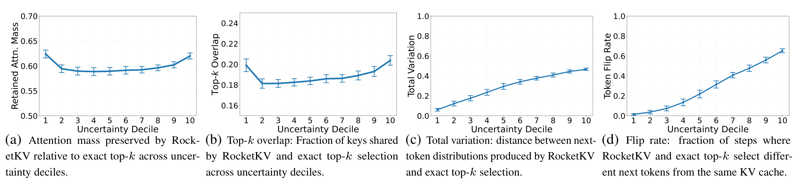
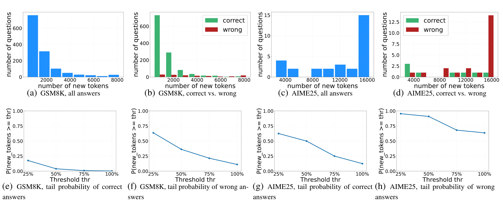
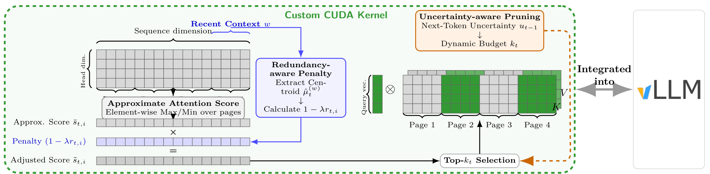
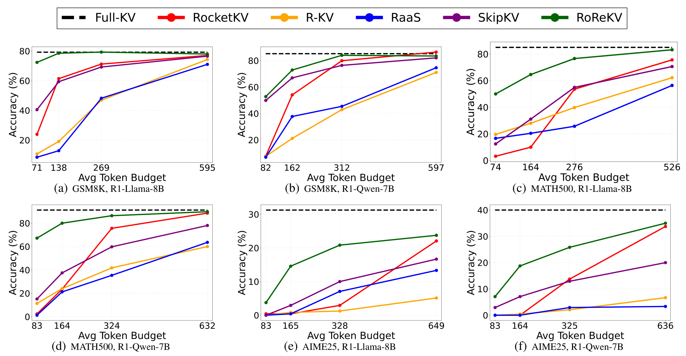
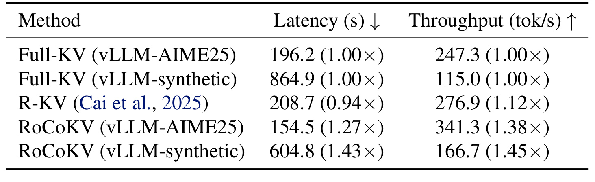
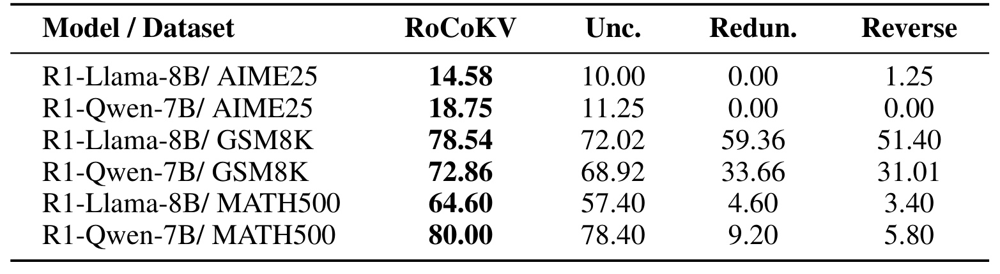
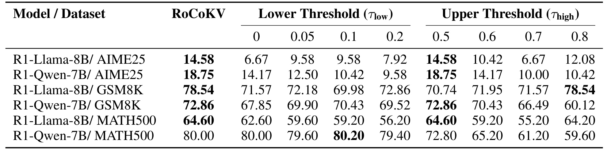
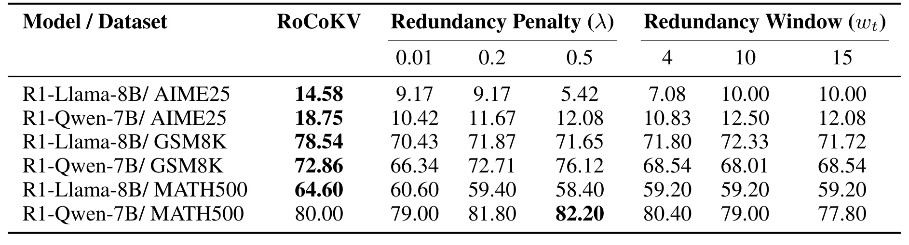

RoCoKV｜按推理不确定性分配注意力预算
长推理时，模型持续生成的中间判断、验算和改写都进入 KV 缓存。RoCoKV 在解码中动态改变参与精确注意力的历史量，同时将与近期内容高度相似的候选键降权，再用定制 CUDA 内核接入 vLLM。论文第一作者 Payman Behnam 来自佐治亚理工学院，合作者包括 Amazon Annapurna Labs、Mercuria Energy Americas、Google、Intel 及独立研究者，个别作者注明工作在佐治亚理工学院期间完成。论文自述将在录用后发布源码，本轮未核验到专属公开实现。arXiv 预印本
长推理模型的缓存开销大量来自持续生成的推理轨迹。反复推导、检查和修正会生成低效或重复的内容，这些内容仍可能获得较高注意力分数，使得压缩历史的同时保留真实推理所需信息变得困难。
1. 背景和问题
1.1 选择近似怎样传导到下一步
解码服务逐步生成时，每个新查询都得访问先前各位置留下的键和值。历史更长意味着多次读取的单位工作明显增加。普通长输入任务里，新请求的大头经常是已知提示词，服务可以在生成之前对提示编码或做缓存策略。推理模型的长输出来自模型与自己的历史反复交互，问题出现在哪一步、需要回看哪一项中间结果，通常不能在预填充时确定。同一请求可能先生成大量简单模板和符号解释，随后对低概率但关键的论证路径作选择。把同一压缩强度施加到这些步骤，计算账可能平稳，质量损失却集中在少部分决定后续方向的位置。作者将目标放在解码步骤如何花费注意力预算，以及有限名额如何由近期重复位置重新分给彼此差异更大的历史。
RocketKV 提供两个可区分的压缩位置。预填充结束后可以做粗粒度筛选。解码过程中，用每页键的逐维边界和少量查询维近似搜索候选，再从被选位置取原键值做精确注意力。前者影响候选支持集合，后者影响以某个查询进行读取的规模。检查后者时，作者以完全相同的缓存状态，把近似 token 选择换成精确的同预算选择，多执行一次前向，从而观察历史集合的差异是否真正传递到输出。这个设计隔离的是选择近似引起的即时扰动。下一步实际采样会使轨迹分叉，则不能再逐字对齐两条自由运行的历史。实验用同分布下概率最大的 token 是否被换掉作为局部观测，连同完整分布距离一起报告，不需要对一次随机采样中的选中项做因果判断。

Figure 1 在 R1-Llama-8B、AIME25、128 token 预算、温度 0.6 的观察中，按下一 token 不确定性从低到高分十组。左一是 RocketKV 相对精确 top-k 保住的注意力质量，始终接近六成。左二对比两种方法入选键的身份，重叠大致在 18.13% 至 20.38%。这两张图没有随分位明显上升。右边两张图改读输出，最低到最高组的总变差由 0.06 到 0.47，概率最大 token 的翻转率由约 1.4% 到 65%。近似方法在后面各组的入选差异并没有突然恶化，模型对这些差异的响应更强。作者还报告逐步不确定度与总变差的 Spearman 相关约 0.65，按轨迹相对进度分组后约 0.646，提示关系不容易只由生成前后阶段解释。精确 top-k 替换使该特定观察里的 AIME25 准确率从 0% 到 16.67%，支持这一数据与预算下选择质量确实有末端影响。右边统计的是相同历史下的单步扰动，不能直接解释每一道题为何失败。左侧重叠数值也不能作服务告警的通用阈值，越过注意力头聚合、生成温度和采样参数之后分布可能改变。
同一名额被错误取代，影响取决于下一 token 候选之间的余量。模板中下一字已经几乎确定时，小小的注意力扰动可能只改变备选的相对分数。生成数学等式中有两个分支势均力敌时，舍入或历史位置替换带来的同等扰动就可能改变后续符号。沿着后一条路径生成，之后的提问上下文已经不同。若解码器能在这些时间提前放宽预算，它可将稳定步骤省出的读取让给容易出错的步骤。判断与控制还要有明确的先后依赖。当前输出熵在本步注意力完成之后才能得到，若要用它配置同一步只能额外前向，抵消服务效率。论文可用的线上信号是上一输出步，且经过低通平滑。所以 Figure 1 说明不确定度和脆弱性有关系，后续还需用端到端对照验证这个滞后一拍的代理是否有效。
1.2 轨迹长度同时含有任务难度和重复
推理过程允许模型写出一段反思后回到原问题，检查假设后重新列等式，甚至对同一个中间答案产生多个等价表达。传统注意力分数可以让某些重复位置积累高分。若许多彼此相似的键都排在 top-k 前列，很少见的约束、公式取值或反例就会被挤出。另一方面，重提同一符号也可能是在授权一个关键推理步骤，重复的词表 token 本身不能代表键向量重复。作者选择近似近期注意力上下文的质心，用它代表某些过度回访的局部主题，同时给最新位置留下不受此相似度惩罚的通道。两种判断都可以在缓存及输出已经驻留设备时计算，给后面的融合实现留出余地。

Figure 2 的前四格将 GSM8K 和 AIME25 的新生成 token 计数做成直方图，既看所有输出，也把正确和错误输出分开。后四格在各自长度上限的 25%、50%、75%、100% 比较条件长尾概率，所以两数据的百分比横轴对应不同绝对位置。GSM8K 的正确输出集中在较短区间，错误输出维持更明显的右尾。AIME25 的难度更高，正确样本同样可能很长，错误样本仍较频繁到达生成上限。生成上限来自该观察实验，GSM8K 为 8192，AIME25 为 16384，主准确率比较把 GSM8K 限在 2048。两组设置不能直接用于同等总 token 的对证。长轨迹可能代表循环，也可能只是题目本就难。图中的条件统计无法判定如果把全部轨迹截短会不会更正确，因此文中实际修改是按模型状态取历史位置，并没有把长度当成终止条件。读图时还要留意分布被上限截断的形状，贴到上限的计数包括本就还没答完的生成，潜在尾部长度并未观测。准确率对这个上限敏感，服务压测时需将自然结束与触顶停止单独计数。
这个切入点和提示保留方法有两个与生产有关的区别。第一，长输出既增大存储，又让每步可读取的内容不断变化。只量缓存里的条目数，无法判断该步实际加载了多少键和值。第二，历史选择本身有成本。近似阶段若还要逐页扫描，实际 HBM 事务取决于内存布局，矩阵理论少乘几个维并不保证物理读到更少字节。完全计算所有配对句向量的全局重复度也会制造排序前的新瓶颈。本文提出的轻量局部代理需要结合 GPU 的访存格式才能体现收益。贯穿后文的三个量是候选池有哪些历史、每步实际读取多少以及原生 cache 分配器占有多少页。前两个描述算法路径，最后一个支配可承载多少并发。三者改变的方向未必一致。
读这篇工作有价值的实验问题由此变清楚。随机摘取同样多的 token，理论上也能减少精确阶段工作量，但很可能改变输出。固定窗口保留新历史，可能把最早的指令和题目条件排除。高分选择覆盖当前 query 行为，却可能重复选中近邻位置。RoCoKV 的两个部件分别问什么时候允许更激进地压缩以及给定名额如何覆盖更有用的历史。在后续系统中，若长推理测得吞吐更高，应进一步配对核对答案质量、实际生成长度、物理页驻留和每阶段读流量，才能从净服务结果理解各机制贡献。
2. 方法
2.1 不确定性引导的自适应剪枝
自适应剪枝以刚完成一步的输出分布作为下一步控制输入。 若分布质量集中在少数词，熵较小，算法倾向选较少历史。决策更分散时，把精确注意力预算向上调。该模型不需要针对某个任务重训参数，既有温度和采样策略决定所估计的分布，阈值应与真实推理配置一起核对。论文的观察图按分位归组只是论证手段，线上实现直接使用有界连续值。
符号解释 $p_t$ 是步 $t$ 预测的下一位置分布，$H$ 是信息熵，$|V|$ 为词表大小，均匀分布下的熵上界用于归一化。$\gamma$ 位于零和一之间，改变有限区间内的响应曲线。$\bar u_t$ 是指数平滑状态，$\beta$ 规定累积信号与新信号的权衡。默认 $\gamma=0.1$、$\beta=0.85$，相邻一步突变会被缓冲，阶跃在多步才传到预算。较小幂会把不少非零熵向上展开映射，阈值作用在变换与平滑之后；不能取另一个模型的原始 entropy 值原样代入。这里的稳定性会交换响应时间。若推理中插入非常不同的工具返回或突然进入一个稀有计算分支，过去低熵不能预告该步会变得敏感。这是代理本身带来的条件。
符号解释 $\tau_{\mathrm{low}}$ 和 $\tau_{\mathrm{high}}$ 是低、高阈值，$\alpha_t$ 是将平滑不确定性映射到零至一的松弛权重。$k_t$ 是下一轮候选选择出的精确注意力 token 名额，$\rho_t$ 是 RocketKV 的压缩参数。$\mathrm{hard}$ 与 $\mathrm{relax}$ 表示两个设置端点。强剪枝的 $k$ 低、$\rho$ 高，松剪枝的方向相反。主文典型配置把 $k_{\mathrm{hard}}$ 和 $k_{\mathrm{relax}}$ 设成基准的 0.9 和 1.3 倍，$\rho$ 则是基准的 1.5 和 0.9 倍。公式首先描述连续插值，实际内核要将预算处理为可索引的整数并受可用序列长度限制。阈值越过两端后预算不再连续增长。$t-1$ 的索引定义了因果顺序，从这一步已经得到的输出分布计算下一步名额，不需要第二次主模型前向。平均读取预算是每步变长后再做统计，不能用端点或其算术平均当替代分母。
2.2 冗余感知的 token 评分
输入缓存有 $N_t$ 个位置。有限近期窗口形成一个表示，再把每个候选是否靠近该表示交给打分器。直接平均原始键可能让向量模长很大的位置决定方向。作者先将每个键单位化，再通过加和和归一化求质心。
符号解释 $k_i$ 是缓存位置 $i$ 在相应 KV 头的键，$\widehat k_i$ 是单位方向。$w$ 为设定的冗余窗口，$w_t$ 避免生成初期把短历史当成长窗口，$\widehat \mu_t^{(w)}$ 是最近 $w_t$ 个方向合成的单位质心。它承载的是局部键方向，和文档自然语言重复程度没有一一对应关系。恰好近零的质心或零范数需要数值保护，主文公式未展开实现中的边界约定。将该逻辑重新实现时可记录范数下界和保护分支命中，以此区分退化条件下稳定性问题与真实机制失败。
符号解释 $r_{t,i}$ 是候选与近期中心的正向余弦相似。最近缓存位置例外置零，免受这项惩罚。$\bar s_{t,i}$ 是 RocketKV 上游估计的非负选择分数，$\widetilde s_{t,i}$ 是加入冗余后的排序依据，$\lambda$ 控制降权强度，默认 0.1。这个乘子至多把分数压低，负相关时只是没有惩罚，不会增加原分。最新位置免惩罚也不意味着无条件锁入集合。R-KV 更接近从全缓存对每个候选求与其余位置的平均相似，再经 softmax 后加到选择规则。这里使用短窗口质心，每个位置只比一个方向，既降低全局两两相似的复杂度，也更偏近期重复的判断。最终注意力读取原始键和值，使用真实 dot product 和 softmax，因此修改作用在进入候选集之前。它不会给每个已被选 token 的贡献乘一次额外折扣。
2.3 vLLM 的三阶段解码

Figure 3 左边的页按序列位置分组，头方向上逐维最大值和最小值用于构造近似注意力估计。蓝色箭头从近期窗口取单位键的质心，形成逐候选惩罚；原估计与惩罚相乘，拼成随位置变化的调整后分数。右上角不确定性路径独立，用上一步的输出估计给本步选择器定预算。沿下方的实线，打分为每个位置决定相对优先顺序，动态预算为优先序列划出截断点。这两个信号分别控制挑谁和挑多少，橙色预算支路不负责改变键的语义相似度。右边绿色块代表被选历史位置，再回到原始页加载真实键值。最终输出仍由准确注意力计算得到，准确仅指选中集合内部。图中的 vLLM 表示通过已存在的插件入口注册解码后端，调度、逻辑块到物理块的映射和前缀缓存继续沿原有体系运行。作者明确称插件在选择过程中不逐出物理页。应同时读 §2.2 的预填预筛选算法、此图的工作集和 §2.4 的物理页保留声明，避免将平均读取名额当成每请求 KV 分配量。近期窗口方向和预算信号从不同支线进入，调试时可分别关停并对照读流量、索引召回和答案质量，定位变化来自评分还是上限。在 GPU 追踪中，计数应按同一时刻的请求和 KV 头对齐，以便确认预算更新没有落到下一批请求。
具体实现中，阶段 A 流式走一遍逻辑 KV，读取页边界和选中的 query 维度求近似 logits，同时计算冗余相似度，接着小归约核把 logits 变成近似 softmax 分数、在 GQA 组内聚合并乘惩罚。核融合避免第二次遍历同一缓存，但余弦计算按附录仍要读原始键并写逐位置分数，因此不能按稀疏维度比例直接推出总 HBM 收益。论文比较 NHD 的默认连续头维与转置后的 KT 键布局。在 NHD 最内层只挑少数维，硬件仍会吞下接近整段的最小访存粒度。KT 将同维的不同 token 排在一起，扫描长序列的候选阶段可以降低近似选择的空读。此布局不改变逻辑页映射，键的页内组织会变化。随后按离散 token 读取整条键时会失去连续性，需要再把已选择的位置按索引排序以重建合并访存机会。作者指出 KT 更适用于扫描长度远大于预算的长序列，短序列要量化额外排序和重排能否抵消。
阶段 B 只读浮点分数行，每个请求和 KV 头配置线程块。每个线程保留自己数据片里的四个局部候选，块级 radix sort 对这些候选统一排序，选定索引写入形状固定的缓冲区。若真实 top-k 里有五个或更多位置落入同一线程负责的片，至少一个会在局部桶阶段消失。因此主实验还包含这项实现近似，代码保留精确 PyTorch top-k 作核对。阶段 C 从已选集合分块加载真实键值，按在线 softmax 累积权重、归一化和加权值。最后一块尺寸未必与运行时 $k_t$ 对齐，边界多余位置会被赋以负无穷分数，确保不会进入输出。预算留在设备张量，固定输出缓冲与实际有效前缀可以在同一个 CUDA graph 内复用，避免每步主机同步。小 batch 时按请求和头并行仍难占满流处理器，split-KV 顺着序列再加维度，合并各片局部结果。它降低了部分长请求阻塞的机会，也产生额外的归约开销，端到端优劣依赖负载。
3. 实验结果
3.1 质量基准和预算对齐
主实验用 DeepSeek-R1-Distill-Llama-8B 与 DeepSeek-R1-Distill-Qwen-7B，两者采用 GQA，RoPE base 分别设为 500K 和 10K。在 A40 上比较 Full-KV、RocketKV、RaaS、R-KV、SkipKV 和 RoCoKV。温度 0.6、top-p 0.95，GSM8K 最多新生成 2048 token，MATH500 与 AIME25 上限 16384。AIME25 的 Pass@1 是每题八个随机回答正确性的平均，每个试次单独评分，不能将统计写成从八个中至少取到一个正确的 Pass@8。MATH500 与 GSM8K 每题生成一次。作者先跑动态 RoCoKV 得到平均 token 预算，再给基线用相配的静态 top-k。各模型、任务和名义档位的实际平均值不一样，所以图上直接看横轴数值，更不能把两个不同数据子图的同一档当作相同记忆条件。预算以精确注意力阶段的平均 top-k 访问量表示，未约束每步波动、物理分配峰值乃至完整近似阶段字节。

Figure 4 的横轴是实际平均读取 token，纵轴是各任务正确率。虚线表示 Full-KV，随横轴位置保持同一参考值，不代表全量模型也正在以该格预算运行。图例绿色写成 RoReKV，但对应正文反复比较的 RoCoKV。GSM8K 两格展示最低预算差距，此后随预算放宽多条曲线向完整注意力靠近。MATH500 在 R1-Llama-8B 约 74 和 R1-Qwen-7B 约 83 个 token 的位置更能显示优势，后者 83 token 下 SkipKV 为 15.20%、RoCoKV 为 67.20%，差 52.00 个百分点。AIME25 更难。在平均预算 328 和 325 时，两个模型分别是 20.83% 和 25.83%。更大的测试预算下达到 23.75% 和 35.00%，距 Full-KV 仍约 7.5 和 5.0 个百分点。图支持在所测预算下优于几种压缩基线，且在某些位置缩小与 Full-KV 差距。从 MATH500 的紧预算大增益直接推成开放域生成始终等质，会忽略 AIME25 残余缺口。反过来只看 AIME25 又会错过小预算上能释放多少可服务质量。线上若直接用论文默认阈值，至少应挑一组重验对中间步骤敏感、RAG 长输入和窄输出的样本，并报告触顶率是否与基线一致。作者没有给每个点的跨种子区间，比主文能支持的排序更细的极小差值应谨慎看待。
对 Figure 4 还要区分预算对齐与训练资源对齐。本方法不用新训练，所有比较共享各自模型检查点，但动态头级选取与静态选取只在统计平均上对齐。若 a 请求连续不确定就把瞬时 $k$ 调大，b 请求长时间低熵则压小，单个 a 请求不必与基线等成本。平均质量改进恰恰可能来自这种把额度移到难题和关键分支的机制。做业务对照时应给出质量与算力预算的曲线，并另外看高难输入组的条件 P99，才能判断小部分用户是否集中承受额外延迟。等平均 token 的结果不能反过来说明峰值成本一样。
3.2 推理子系统和总耗时

Table 1 的行按实际被测负载划分，第一个 Full-KV 与其 RoCoKV 行是 AIME25，第二个 Full-KV 与另一行是长合成负载。R1-Llama-8B 的 token 预算为 512。AIME25 batch 16 的延迟由 196.2 降到 154.5 秒，吞吐从 247.3 到 341.3 token/s，对应 1.27 倍速度和约 38% 吞吐增加。长合成 batch 6 采用达到预定生成长度的停止条件，延迟 864.9 变为 604.8 秒，吞吐 115.0 提升到 166.7 token/s，分别约 1.43 倍与 45%。R-KV 的单行给出 208.7 秒和 276.9 token/s，倍数使用 AIME25 Full-KV 的分母。延迟变慢但吞吐变高，说明两个指标的统计单位和生成序列分布并不天然固定。这不是单 token attention 核微基准；也没有给以相同答案质量为约束的生产容量、P99 或单请求逐 token 延迟。合成负载有意隔离更长解码时的吞吐，无法显示数学决策是否受损。质量预算 128 的模块消融和这里 512 的内核比较是两组设置。若想判断真实服务收益，应分别测固定有效长度的算子对比和自然停止的完成请求对比，记录每行总生成 token、TTFT、完整延迟与掉线率。该信息有助于分解内核省时和推理轨迹变短。还可以将 41.7 秒的净时间差先保持为批处理口径，对照每批完成请求数和每条轨迹的有效工作量，避免把总耗时直接写成单请求算子的分位变化。
把系统成本拆到三处能定位容易被总表隐藏的条件。阶段 A 是从可能很长的页空间读取打分候选，在短缓存里单位成本较小但带宽节省也小。阶段 B 的 radix sort 和局部桶主要读评分，不碰大份 KV；如果运行批量压得很紧或预算很高，固定形状缓冲仍有 overhead。阶段 C 只处理紧缩后的有效位置，长负载上的收益在这里放大。AIME25 真实生成因为停止和轨迹变化，不能假定两种方法执行了同一个 token 数或同样长的每步历史。即便两个设置都有较高吞吐，它们也可能对应不同质量或底层资源。记录总 GPU 时间以外再记每阶段 bytes 和有效位置数，才有可能把注意力改进迁到不同型号设备。
3.3 控制变量怎样改变结论

Table 2 的四列是完整 RoCoKV、只开动态不确定性、只开冗余，以及将预算分配方向翻转。它们使用 128 token 的对照，衡量 Pass@1。两种 AIME25 的只冗余均为 0，加入不确定性后为 10.00 和 11.25，完整为 14.58 和 18.75。R1-Llama-8B 在 GSM8K 只开冗余已有 59.36，动态为 72.02，完整 78.54。R1-Qwen-7B 在 MATH500 完整 80.00，动态 78.40，冗余 9.20，逆向为 5.80。在安排预算的方向性验证中，反过来更多剪不确定步骤产生最显著退化。表格显示不同任务收益分解不同。可将 80.00 对 5.80 视为当前强错置对照的证据，不能当成所有策略相对普遍基线的业务改善数。只比较完整到动态的 1.60 个百分点，也不能忽略冗余部件独立时统计落点很低，两个筛选步骤存在交互。用这一组设计迁移阈值时可先做等实际平均预算的消融，再补固定预算分数替换和同随机种下的动态分配，避免由于测试时长尾预算不同而把交互项错归给单个部件。这里完整设置对两个 AIME 模型的收益方向一致，但一题包含多次相关输出，比较最好仍以题目为单位配对，并区分常见正确项与真正新增正确项。

Table 3 按左侧任务和模型固定分组，低阈值的四列为 0、0.05、0.1、0.2，高阈值四列为 0.5、0.6、0.7、0.8。两组扫描分别报告，其数值不能拼成网格，也不能推断任意高低阈值搭配等价。R1-Qwen-7B 的 MATH500 在低阈值由 0 到 0.2 范围里集中在 79.40 至 80.20，改变高阈值后由 72.80 降至 59.60，跨度 13.20 个百分点。相同模型在 GSM8K 高阈值增大也会从 72.86 下降到 60.12。R1-Llama-8B 的 AIME25 高阈值不是单调变化，例如 0.5 为 14.58，0.7 为 6.67，0.8 又到 12.08。作者关于低阈值相对不敏感的描述有部分数据支持，高阈值则不能沿用同样判断。两种模型底座、分布熵、解码轨迹和平均预算都会在阈值改变时联动。线上若固定 P99，适合另外记录统计区间内的熵累积分布与动态名额分布，观察变化来自多少步骤跨越松弛区间，抑或仅少量极端请求被改了。重新校准时也应记录低于阈值、高于阈值和位于过渡区的步骤各占多少，模型温度变化后这三部分可能重新分布。只在一条折线里最佳的阈值，无法区分是采样波动还是确有更稳定的预算切换点。

Table 4 左半扫描三个惩罚强度，右半扫描三个窗口长度，仍是预算 128 的 Pass@1。GSM8K 的 R1-Llama-8B 窗口 4、10、15 从 71.80 到 72.33 再到 71.72，确实彼此接近。但三列均比完整配置的 78.54 更低，不能把这一行概括为窗口如何取都不影响绝对水平。R1-Qwen-7B 的 MATH500 则从窗口 4 的 80.40 到窗口 15 的 77.80，差超过两个百分点。相同任务换冗余系数 0.5 得 82.20，高于标作 RoCoKV 的 80.00；而 R1-Llama-8B 的 AIME25 在同一强惩罚设定是 5.42，低于默认格 14.58。近期重复指向与语义有用位置的重叠依模型而变，某些任务再增大惩罚能压制循环，另一些任务会正好压掉被反复引用的条件。论文这些单独参数扫描与核心精度图的数据横轴均值得保留，避免只抄默认系数。默认列也不能用作独立的另一次正式评测，因为论文未报告不同种子或为扫描所用的调参与测试数据隔离信息。选择窗口前可以对几个常见失败轨迹保存重复密度与重试模式，确认窗口拉长时到底惩罚了冗余自我验证，还是给同一条可靠推理证据累加了过强惩罚。
附录同时试了句级、句与 token 混合以及按层分配。句级将标点触发取得的推理段落压成代表特征，处理的是更粗粒度的重复，主文部署数来自 token 级路径。按层结果使用 GSM8K、预算 512、温度 1.0、top-p 1.0，R1-Llama-8B 为 79.15% 对 79.23%，R1-Qwen-7B 为 85.75% 对 85.22%。这些设置不同于主实验；论文还指出当前按层接入出现吞吐退化，因此第二组略高于完整 KV 的附录结果不等同于主插件同样能在同一配置提高质量与吞吐。把不同粒度写进同一推理框架时需要验证缓存布局和调度支持，否则理想的逐层预算可能带来更多动态 shape 与 launch 开销。
4. 总结
4.1 方法的可迁移处
这篇论文把历史读取的价值拆成候选覆盖和实际输出两个层次，最可复用的是 Figure 1 的配对检查。即便底层前几名索引匹配率在很多请求中相同，尾部的真实结果也可能不同，因为某些位置只剩很小的概率余量。推荐生成召回中，可对同一用户上下文、同一目标模型和码本，在第一个或第二个语义码槽位做精确与近似候选替换，记录 top-k 候选身份重叠、合法码比例、后续目标召回和码路径翻转之间的关系。先锁同一历史再运行自由解码，能将局部支持变化和后续路径分叉对应到证据层。当前论文的六组数学结果不能代替这一验证，不过提供了一个能隔离输入、历史和策略的实验设计。
推理服务上，RoCoKV 用两种轻量代理给动态稀疏性定价。取前步熵减少额外计算，近期质心把全局成对比较换成一次局部相似，把它们放入动态预算与近似分数相交的地方，再用 GPU 形状和页映射落实。根据论文的代码状态，尚不能独立运行作者的内核检查阶段计时。应用上的首个目标可以是复现等平均访问量下的精度与阶段延迟，而非复刻所有 CUDA 特化。这样也能在后续公开实现可用时，用同样的记录检查 proxy、运行时舍入和 Top-k 近似是否一致。
4.2 边界和后续核验
- 不确定性滞后一拍且平滑，任务分支突然变化时可能用上过小的读集。应在每种负载先统计滞后相关性，尤其把工具调用返回之后和推理切换点独立分桶。
- 质心相似是键层面的局部代理，反复引用的原始约束也可能被降权。对需要跨数百 token 回查计算变量的题，宜检查被换出的关键位置，并保留能区分质量回归和一般候选替换的逐题数据。
- 实测效率局限于 A40、一个模型和两个批大小，没有真实混负载的 P99。将注意力读预算换成物理页配额或 QPS 容量超出本文证据，需要先取得实际 allocator 页数和内核 HBM 流量。
- AIME25 数据少，随机采样均值不能粗暴合并成独立题数，也没有跨任务的系统置信区间。扩展验证应维持每题同种子与同最大输出长度，再按题配对重抽样。
- 模块近似和内核近似同时存在。若实际结果回归，应依次检查 RocketKV 粗评分、质心惩罚和桶 top-k 选择，重跑精确 PyTorch 分支，避免把桶容量问题误归给不确定性策略。
后续可以先从一个可重放的小设置取得每请求 KL 或总变差、预测翻转率、注意力位置回归及 Pass@1。服务记录可补阶段 A/B/C 的 HBM 读量、kernel launch 时间、实际 $k_t$ 的尾部分位和物理驻留页数。最后将固定生成长度压测与业务自然停止压测并列，加入质量门槛，再看共享缓存、多种模型长度及并发控制是否截断在实际负载边界。这样的比较能解释作者 A40 实验怎样转化为某一服务可用的少读预算，也能把只在离线基准中成立的收益及时识别出来。若后台使用前缀共享，复测还要确认不同请求的预算变化不会修改共享页。缓存复用保持不变，注意力后端改造才具备减少工作量且不破坏调度的价值。